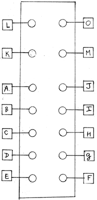

|
WlRING DIAGRAM: SEQUENCER (10 stages)
 -Use PC Board R16. SELF TEST & USER'S INSTRUCTIONS Using a pulse source such as the pulse outputs of any of the SLEWS (used as oscillators), plug it into the "CLOCK" input of the SEQUENCER. Set the clock speed to about 4 a second. Plug stage 1 output .into a mixer & monitor over loudspeakers. Mote that you should be hearing two clicks plus 8 silent clock spaces. This is because you are hearing both the rising edge and falling edge of a stage's output pulse. Now test for proper sequencing operation by plugging the outputs of stage 2,3,4 etc... into another input of the MIXER. By counting clicks & silent spaces, you should be able to determine whether all outputs are in proper sequence. (Stage 1 + 2 will be heard as 3 clicks and 7 spaces; I + 3 will be heard as 4 clicks and 6 spaces; I + 4 will be 2 clicks, space, 2 clicks, 5 spaces; etc,.. ) Now set the clock frequency to a higher speed. Plug a patchcord from anyone of the SEQUENCER's outputs past stage 2, back into the "HOLD" input. Clicking should cease since the action of this input is to disable the sequencing action while a pulse is "high" into it. Perform the same type of test using any stage's output back into the "RESET" input. Effective frequency heard will be raised, since the effect of a pulse into the "RESET" input is to return the sequence to stage 1 from whatever stage it may have reached. This is a useful feature allowing for any sequence between 2 and 10. When clocked at an audio rate, the "RESET" function may be used with good effect for accurate freauency subdivision. Testing of the second "RESET" input is done exactly as above. Having two "reset" inputs allows for many interesting multi-rhythms.
|